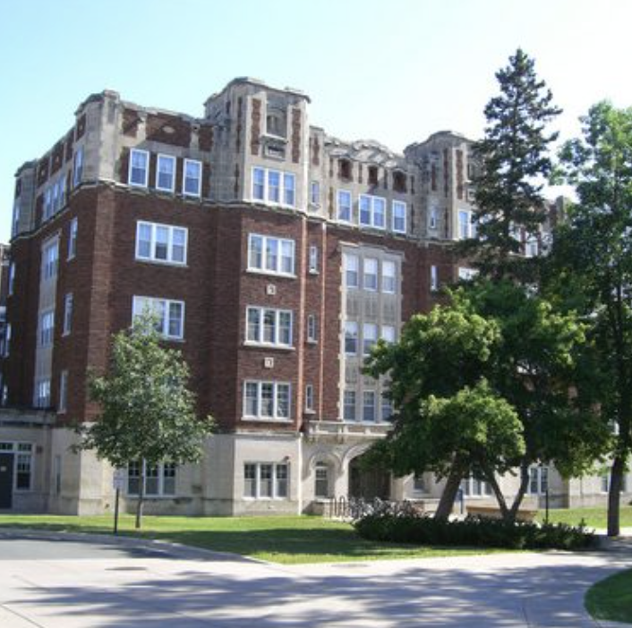

Davis Hall was constructed in 1923 by architectural firm Patton, Holmes, and Flinn. The dormitory was originally called “South Hall” and was a men's dormitory on the “West Side” of campus. Davis is known for its Gothic Revivalist style, with towers, spires, and plenty of ornament.

Gothic Revival style was in contrast to classicism, which had become a bit too polished for the taste of some - A.W.N Pugin being a notable example. Davis was meant to conserve image and “preserve” civilization. Davis is in the “Cowling” era of buildings.